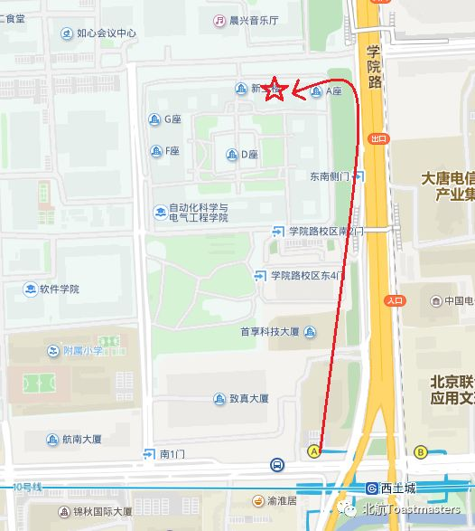

Beihang Toastmasters Club is run by a group of officers. Please feel comfortable to contact us whenever you have any question.
北航Toastmasters俱乐部由一支官员队伍运营。如果有相关问题，请随时与我们联系。
访客对俱乐部有任何问题请先联系会员副主席。
Guests please contact Vice President Membership firstly.
现任官员
Incumbents
主席President
Cyril
负责统筹俱乐部重大事项
in charge of major club decisions
微信Wechat: xygong121338
教育副主席
Vice President Education
Kaisense
负责俱乐部会议日常运行以及质量控制
in charge of meeting operation and quality control
微信Wechat: chenjikai2014
会员副主席
Vice President Membership
Samuel
负责吸收新会员以及会员管理
in charge of member recruitment and management
微信wechat: chushunzhou
公关副主席
Vice President Public Relations
Claire
负责俱乐部外联及推广事务
in charge of public relations and promotion
微信Wechat: clairegong2013
秘书长Secretary
Michael
负责俱乐部会议记录
in charge of meeting records
微信Wechat: sunzhaoyong123
财政官Treasurer
Star
负责俱乐部财务收支
in charge of financial balance
微信Wechat: chenxingstar00
警卫官Sergeant at Arms
keven
负责俱乐部安保以及会前登记
in charge of security and guest registration
微信Wechat: kvenux
在这里，我们一起成长，一起学习演讲，学习英语，提高领导能力，结识一群志同道合来自五湖四海的朋友，收获颇丰。
也许，我们不是最会说但一定是最敢说
我们会怀着感恩的心
陪着头马 慢慢变老
北航Toastmasters 简介
北航Toastmasters国际英语演讲俱乐部是一个面向校内外提供专业化、高标准英语的交流平台，旨在提升公共演讲和人际沟通能力，培养战略领导和管理能力，增强自信力，并结识校内外、国内外各行各界朋友。
北航Toastmasters自创始之时，就一直秉承Toastmasters International总部的优良传统，始终坚持非营利性的服务理念，努力为学校师生和校外各界朋友提供高质量的服务。
活动时间：每周五19:00-21:30
活动地点：北航新主楼 A216（具体以公众号推送为主~）
You can find us by the following map of Beihang University.
